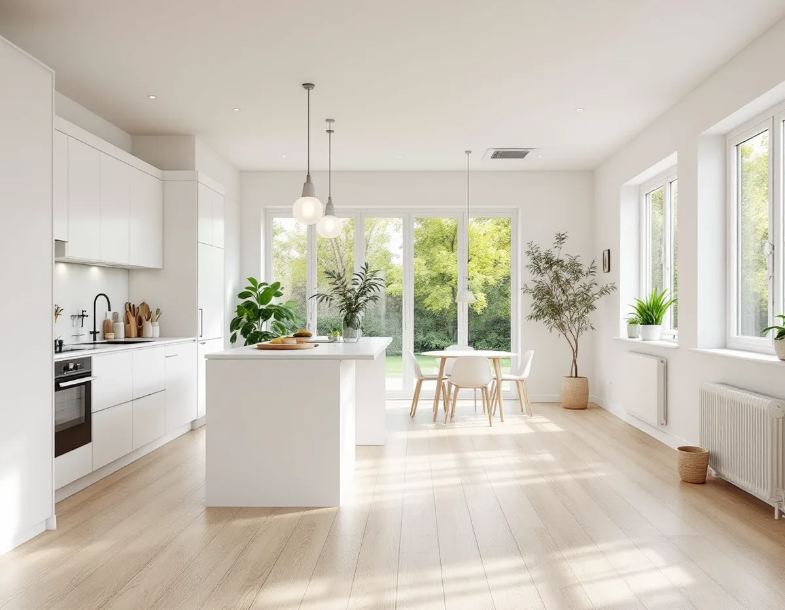
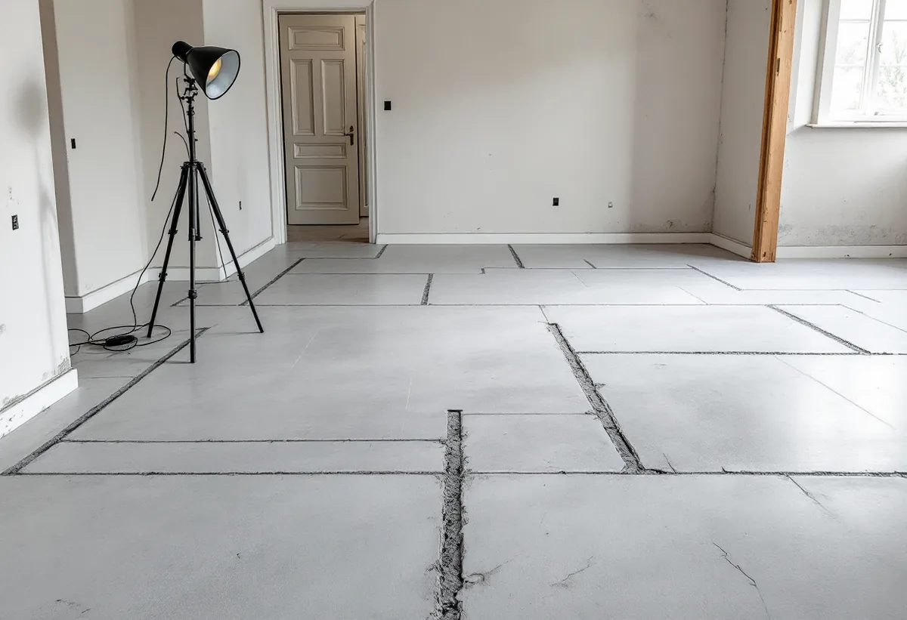
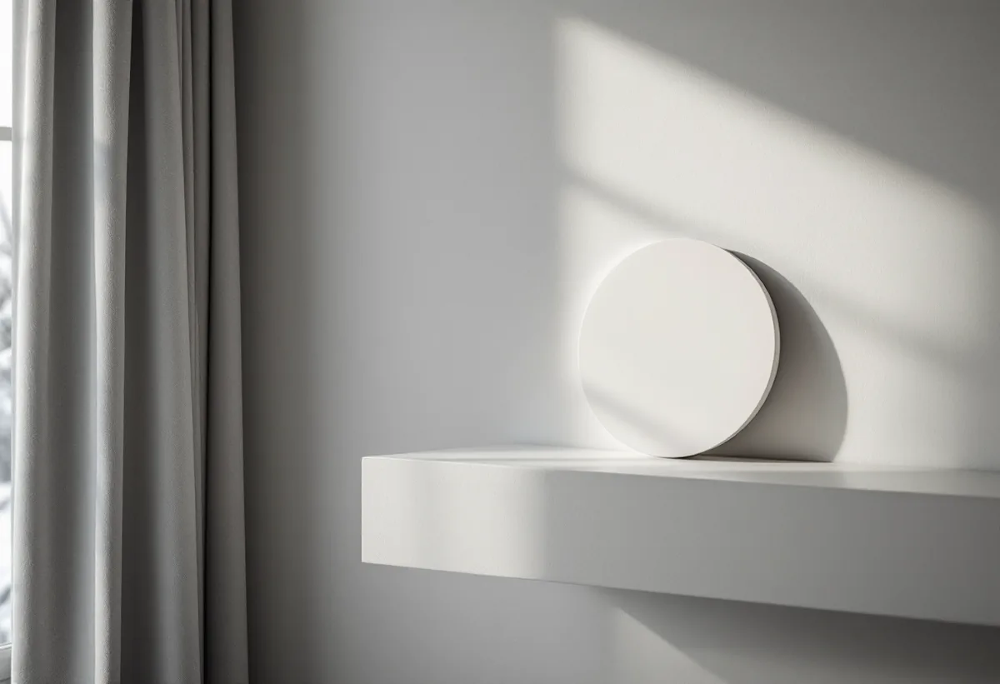

Platsbesök
Vi går igenom huset, grunden och ventilationen och frågar efter tidigare radonmätningar.
En stor renovering kan ändra hur luften rör sig i huset och därmed hur mycket radon som stannar inomhus. Geal Entreprenad AB totalrenoverar villor och radhus i Sollentuna och tar upp radonfrågan redan vid platsbesöket, så att eventuella åtgärder kan göras medan golv och väggar är öppna.

Sollentuna kommun skriver att radonhalten i en byggnad behöver mätas var tionde år, eller i samband med större renoveringar, för att se till att den inte överstiger 200 becquerel per kubikmeter. Det är du som fastighetsägare som ansvarar för att mätningar görs och för att åtgärda om det behövs. Kommunen påpekar också att mätvärdena kan variera mellan närstående hus, eftersom byggnadsteknik, utförande och ventilation skiljer sig åt.
Strålsäkerhetsmyndigheten rekommenderar en ny mätning när det har gått mer än tio år eller när byggnadsåtgärder som kan påverka radonhalten har genomförts. Myndigheten tar fönsterbyte som exempel: nya fönster kan ändra luftomsättningen i huset, och vid all renovering rekommenderas att radonhalten mäts igen. En totalrenovering rör ofta både fönster, ventilation och golv på en gång.

I kommunens radonkarta kan du se mätvärden på olika fastigheter. Kartan visar i nuläget bara enbostadshus, alltså villor, radhus och liknande, och mätningarna som syns är högst tio år gamla. Finns ingen mätning på din fastighet kan du fråga kommunens kontaktcenter. Ett lågt värde hos grannen säger dock inte säkert något om ditt hus, eftersom halterna varierar från hus till hus inom samma område.
Radon kommer oftast från marken och berggrunden och tar sig in genom sprickor och otätheter i grunden eller där el, vatten och avlopp går in i byggnaden. Strålsäkerhetsmyndigheten skriver att radonhalten i marken är tillräcklig för att kunna ge för hög halt inomhus om huset är otätt mot marken. Radon kan också komma från blåbetong som tillverkades 1929–1975. Det kommunala dricksvattnet i Sollentuna är inte radonhaltigt, men har du egen brunn behöver du själv kontrollera vattnet.
En radonmätning bör pågå i minst två månader under eldningssäsongen, som enligt Strålsäkerhetsmyndigheten normalt är mellan den 1 oktober och den 30 april. I ett småhus mäts i minst två punkter och på varje plan med boendeutrymmen. Den vanligaste metoden är spårfilmsdosor från ett ackrediterat laboratorium, som du kan placera ut själv. I Sollentuna kan mätning beställas från oktober till slutet av februari.
Det påverkar planeringen av en totalrenovering. Vill du veta om huset behöver radonåtgärder innan golven rivs upp behöver mätningen göras under vinterhalvåret före byggstarten. Blir huset klart under sommaren får den uppföljande långtidsmätningen vänta till nästa eldningssäsong. I vissa fall kan kommunens miljökontor också ha resultat från tidigare mätningar.
Strålsäkerhetsmyndigheten skriver att första steget är att ta reda på varifrån radonet kommer, och att en radonkonsult kan hjälpa till med utredningen. Kommer det från byggnadsmaterialet kan luftväxlingen ökas, och i enklare fall räcker ofta ett frånluftssystem med fläkt. Kommer det från marken kan sprickor och otätheter i grunden tätas, och räcker inte det kan en radonsug, radonbrunn eller smalrör skapa undertryck under huset. Efter åtgärden ska en ny långtidsmätning visa att den har haft effekt.
Under en totalrenovering ligger genomföringar för rör och kablar ofta åtkomliga, och ventilationen byggs ändå om. Det radonbidrag som tidigare fanns går däremot inte längre att söka, enligt myndigheten. Om ventilation och stammar i badrummet finns mer under badrumsrenovering i Sollentuna, om köket under köksrenovering i Sollentuna och om större ombyggnader på sidan om villarenovering.

Vi går igenom huset, grunden och ventilationen och frågar efter tidigare radonmätningar.
Om tiden medger mäter du radonhalten under eldningssäsongen innan byggstart.
Eventuella radonåtgärder redovisas som egna poster, skilda från övrig renovering.
Genomföringar för el, vatten och avlopp tätas medan de går att komma åt.
Ventilation, rum och ytskikt byggs om i tur och ordning.
En ny långtidsmätning visar radonhalten i det renoverade huset.
Skatteverket ger rotavdrag för att sanera radon i samband med byggarbete i ett småhus, liksom för att riva väggar och bygga om planlösningen. Att mäta radon ger däremot inget avdrag.
Företaget får dra av högst 30 procent av arbetskostnaden på fakturan. Rotavdraget är högst 50 000 kr per person och år och högst 75 000 kr tillsammans med rutavdrag. Material och resor ger inget avdrag. Geal drar avdraget direkt på fakturan.
Hur stor del av huset som renoveras, om grunden behöver tätas, om ventilationen ska byggas om och vilken standard rummen får väger tyngst. Efter ett gratis platsbesök får du ett skriftligt kostnadsförslag.
Renovera hela huset eller lägenheten.
Villarenovering →Takbyte, takbesiktning och plåtarbeten.
Takläggare i Sollentuna →Norrviken, Tureberg och Edsberg.
Takrenovering i Sollentuna →Radhus, villa och en extra bostad.
Attefallshus i Sollentuna →Tillbyggnad, tomtdelning och lov.
Byggföretag i Sollentuna →Ny kulör och lov i villastaden.
Fasadmålning i Sollentuna →Buller, ljudglas och radhus i Sollentuna.
Fönsterbyte i Sollentuna →Täta gamla fönster med ventilationen i åtanke.
Fönsterrenovering i Sollentuna →Radhus i Sjöberg och villor nära stationerna.
Golvläggare i Sollentuna →Massivt trä eller lamell – vad går att slipa.
Golvslipning i Sollentuna →Villastad och radhuslängor.
Köksrenovering i Sollentuna →Radhusplåt, bleck och rännor i Sollentuna.
Plåtslagare i Sollentuna →Ansökan, solceller och radhus.
Takbyte i Sollentuna →Ny tapet efter prov av väggen.
Tapetsering i Sollentuna →På höjden, nya byggregler och ritningar.
Tillbyggnad i Sollentuna →Villastad, radhus och ventilationen.
Badrumsrenovering i Sollentuna →Villor och radhus i Sollentuna.
Fasadrenovering i Sollentuna →Villor och radhus i Sollentuna.
Målare i Sollentuna →Altaner, uterum och bryggor.
Snickare i Sollentuna →